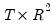

The “name=” option stores the results in a matrix, where

is the number of unique residual cross-product terms. For a VAR with

endogenous variables, . The first

rows contain statistics for each individual test equation, where the first column is the regression R-squared, the second column is the
F-statistic, the third column is the
p-value of
F-statistic, the 4th column is the 

statistic, and the fifth column is the
p-value of the

statistic.
The numerator and denominator degrees of freedom of the F-statistic are stored in the third and fourth columns, respectively, of the -
st row, while the

degrees of freedom is stored in the fifth column of the

-
st row.
In the  -st
-st row and first column contains the joint (system) LM chi-square statistic and the second column contains the degrees of freedom of this

statistic.
See “White's Heteroskedasticity Test” for a discussion of White’s test. For the multivariate version of this test, see
“White Heteroskedasticity Test”.